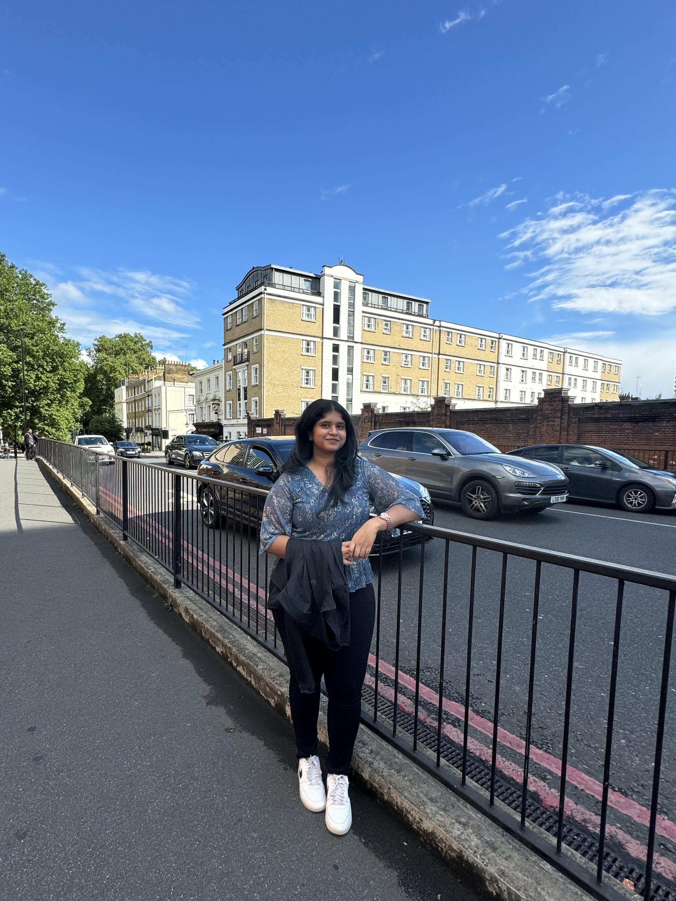

I am S.S. Shaswatha, a 19-year-old student pursuing a B.Tech in Computer Science with a specialization in the Internet of Things at Vellore Institute of Technology, Vellore. I come from Coimbatore, Tamil Nadu, and have a strong interest in technology, creativity, and learning new things. My journey so far has been about balancing academics with extracurricular activities.
I completed my schooling at Yuvabharathi Public School in Coimbatore, where I actively participated in academics and extracurricular activities. As a trumpeter in my school band, I had the opportunity to perform at various events, showcasing my passion for music. I also excelled in sports and the arts, winning a gold medal in the Inter-School Sahodaya Competition for both dancing and swimming. Additionally, I represented my school in inter-school badminton and table tennis tournaments, reflecting my competitive spirit and love for sports.
Exploring new places and trying different cuisines are my greatest joys. I have been fortunate to visit 12 countries, including Japan, Singapore, France, Switzerland, the Netherlands, Germany, Dubai, Indonesia, the UK, Scotland, Australia, and China. Among them, London stands out as my favorite city for its charm and vibrancy. My hobbies include dancing, watching movies, and listening to music. I also enjoy staying active by playing badminton, table tennis, and swimming, which keep me energized and focused.